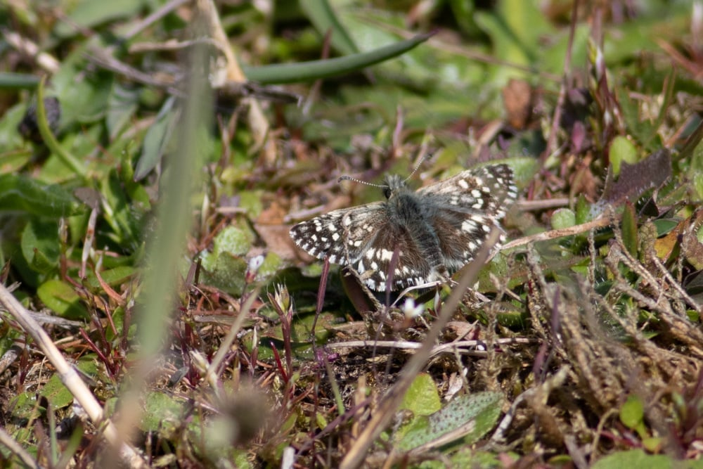

Oriënterend onderzoek
Quickscan flora en fauna
Een oriënterend ecologisch onderzoek dat beoordeelt of beschermde soorten of habitats op of nabij uw locatie aanwezig kunnen zijn. Op basis daarvan bepalen we of nader onderzoek of een omgevingsvergunning nodig is.
Vrijblijvend overleggenWat is een quickscan flora en fauna?
Een quickscan, ook wel oriënterend ecologisch onderzoek of voortoets soorten genoemd, is de eerste stap in het ecologisch onderzoeksproces. Een ervaren ecoloog bezoekt de locatie en beoordeelt of er beschermde soorten aanwezig zijn of kunnen zijn, en of uw plannen daar gevolgen voor hebben.
De uitkomst bepaalt of aanvullend, soortgericht onderzoek nodig is, bijvoorbeeld vleermuis- of broedvogelonderzoek, of dat de ingreep zonder ecologische bezwaren kan plaatsvinden. Een quickscan is een momentopname en geen vervanger voor protocollair soortgericht onderzoek.

Wat zit er in elke quickscan?
Ongeacht de omvang van de locatie bevat elke quickscan van Van Der Ham Ecologie deze onderdelen.
Bureauonderzoek
Raadpleging van verspreidingsdatabases (NDFF, Waarneming.nl), historische kaarten, luchtfoto's en omgevingsinformatie om een beeld te vormen van potentieel aanwezige soorten.
Veldbezoek
Een bezoek aan de locatie door een ervaren ecoloog, die het terrein beoordeelt op de aanwezigheid van beschermde soorten en de geschiktheid van het habitat.
Soortenlijst
Een overzicht van waargenomen soorten en een beoordeling van potentieel aanwezige beschermde soorten op basis van het habitat.
Habitatbeoordeling
Een beoordeling van de kwaliteit van het habitat voor relevante soortgroepen, waaronder vleermuizen, broedvogels, amfibieën en beschermde planten.
Risicobeoordeling
Een inschatting van de ecologische risico's van uw ingreep in relatie tot de aangetroffen of te verwachten soorten en het juridische kader van de Omgevingswet.
Digitale rapportage (pdf)
Een helder rapport met conclusies en aanbevelingen, direct bruikbaar als bijlage bij uw omgevingsvergunning of als onderbouwing richting het bevoegd gezag.
Zo werkt het
Van aanvraag tot rapport, met korte lijnen en één vast aanspreekpunt.
-
Aanvraag en intake
U neemt contact op of vult het contactformulier in. Wij stellen enkele gerichte vragen over de locatie en de voorgenomen werkzaamheden, zodat we de juiste aanpak kunnen inschatten.
-
Offerte en bureauonderzoek
U ontvangt een vrijblijvende offerte op maat. Na akkoord starten we met het bureauonderzoek: verspreidingsdata, historische luchtfoto's, bodemkaarten en omgevingsinformatie.
-
Veldbezoek
Wij bezoeken de locatie op een ecologisch geschikt moment. Het veldbezoek duurt doorgaans 30 tot 90 minuten, afhankelijk van de grootte en complexiteit van het terrein.
-
Rapportage en nazorg
U ontvangt een helder pdf-rapport met conclusies en aanbevelingen. Wij lichten de bevindingen desgewenst telefonisch toe en denken mee over de vervolgstappen.
Voor welke situatie zoekt u een quickscan?
Dit zijn de twee meest voorkomende situaties. Valt uw project hier niet precies onder? Wij maken altijd een beoordeling op maat.
Woning en tuin
Gaat u verbouwen, verduurzamen, een aanbouw plaatsen of uw tuin ingrijpend aanpassen? Veel algemene soorten als gierzwaluw, huismus, vleermuizen en marters komen juist in en om woningen voor. Een quickscan voorkomt verrassingen tijdens de bouw.
- Sloop of renovatie van woning of schuur
- Verwijderen van dakpannen, gevelbekleding of spouwmuur
- Verduurzaming waarbij nestgelegenheid kan verdwijnen
- Kap van grote bomen op uw perceel
Bedrijfspand en terrein
Wordt uw kantoor, loods of agrarisch gebouw gesloopt, gerenoveerd of herbestemd? Zeker oudere panden en agrarische gebouwen zijn vaak in gebruik als verblijfplaats voor vleermuizen en broedvogels. Een quickscan in een vroeg stadium voorkomt vertraging en onnodige kosten.
- Sloop of grootschalige renovatie van een pand of loods
- Herbestemming van een agrarisch gebouw
- Verwijderen van veel begroeiing of bomen
- Functieverandering met een ruimtelijk plan
Wanneer is aanvullend onderzoek nodig?
Blijkt uit de quickscan een reëel risico op beschermde soorten, dan is soortgericht vervolgonderzoek nodig, volgens vastgestelde protocollen. Dat is seizoensgebonden.
Vleermuizen
Mei tot oktoberMeerdere avond- en nachtbezoeken bij sloop of renovatie van gebouwen met geschikte spouw of dakconstructie.
Broedvogels
April tot juliOnderzoek naar broedvogels, met aandacht voor jaarrond beschermde nesten zoals gierzwaluw en huismus.
Beschermde planten
April tot septemberGericht veldonderzoek naar beschermde plantensoorten op locaties met geschikt habitat.
Amfibieën en reptielen
SeizoensgebondenBij poelen, sloten of ruig terrein: gericht onderzoek naar soorten als kamsalamander, rugstreeppad of hazelworm.
Begin op tijd met de quickscan
Blijkt aanvullend onderzoek nodig, dan is dat gebonden aan het seizoen van de betreffende soort. Wij informeren u daar direct over en adviseren over timing, kosten en de impact op uw planning. Lees meer over aanvullend onderzoek.
Veelgestelde vragen
Hoe lang duurt een veldbezoek?
Dat hangt af van de grootte en complexiteit van de locatie. Voor een particuliere tuin of woning rekent u op 30 tot 60 minuten. Voor een groter bedrijfspand of terrein kan dat oplopen tot anderhalf uur.
Moet ik zelf aanwezig zijn bij het veldbezoek?
Dat is niet verplicht, maar wel prettig. U kunt dan direct vragen stellen en wij kunnen u wijzen op relevante bevindingen. Toegang tot het perceel moet in ieder geval geregeld zijn.
Hoe snel ontvang ik het rapport?
Na het veldbezoek ontvangt u het rapport doorgaans binnen twee weken. Bij urgentie is spoedlevering vaak mogelijk, neem daarover contact op.
Is een quickscan voldoende voor mijn vergunning?
Dat hangt af van de uitkomst. Wijst de quickscan uit dat er geen beschermde soorten aanwezig of te verwachten zijn, dan is het rapport meestal voldoende als ecologische onderbouwing. Is nader onderzoek nodig, dan staat dat duidelijk in het rapport.
Wat als er wél beschermde soorten aanwezig zijn?
Dan adviseren wij u over de vervolgstappen: aanvullend onderzoek, het aanpassen van de werkwijze of het aanvragen van een omgevingsvergunning flora- en fauna-activiteit bij het bevoegd gezag. Wij begeleiden u door dat proces.
Werken jullie in heel Nederland?
Ja. Van Der Ham Ecologie is actief door heel Nederland.
Kunnen jullie ook het vervolgonderzoek doen?
In veel gevallen wel. Wij voeren ook soortgericht onderzoek uit, zoals vleermuisonderzoek en broedvogelinventarisaties. Is dat bij uw situatie van toepassing, dan bespreken we dat na de quickscan met u.
Vraag een vrijblijvende offerte aan
Beschrijf kort uw plan en locatie, dan ontvangt u binnen 24 uur een offerte op maat. Helder en eerlijk, geen verrassingen achteraf.